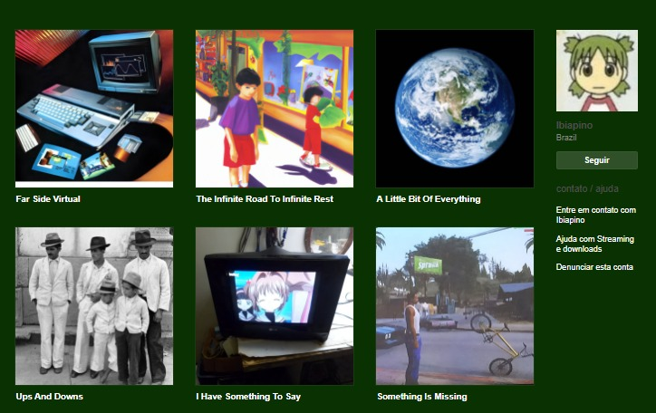
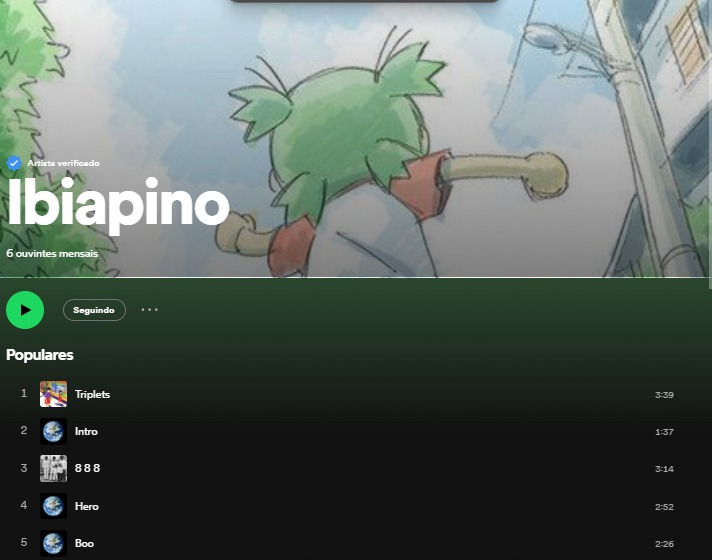
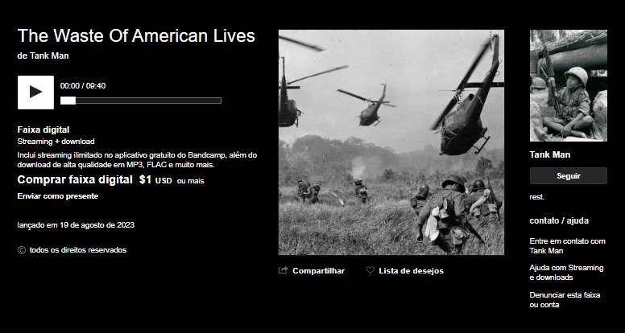
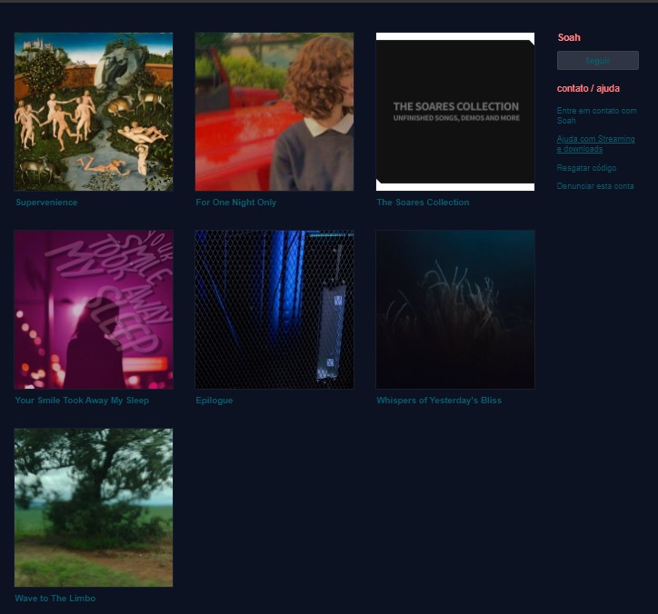
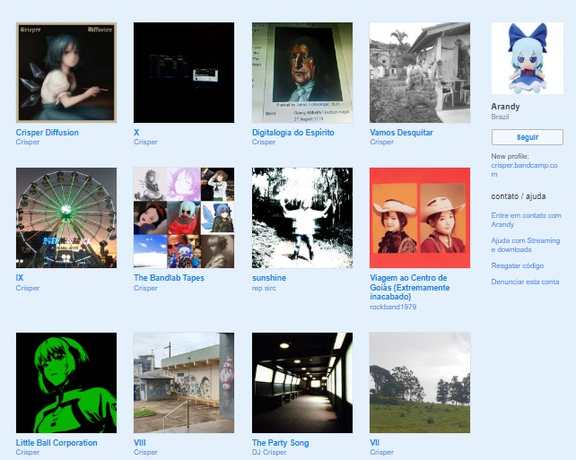

Projetos da Cirno Gang Confira todos os projetos oficiais da Cirno Gang já lançados: Ibiapino Ibiapino Songs:  Ibiapino Bandcamp  Ibiapino Spotify  Tank Man Bandcamp Soares Soares Songs:  Soares Bandcamp Crisper  Crisper Bandcamp